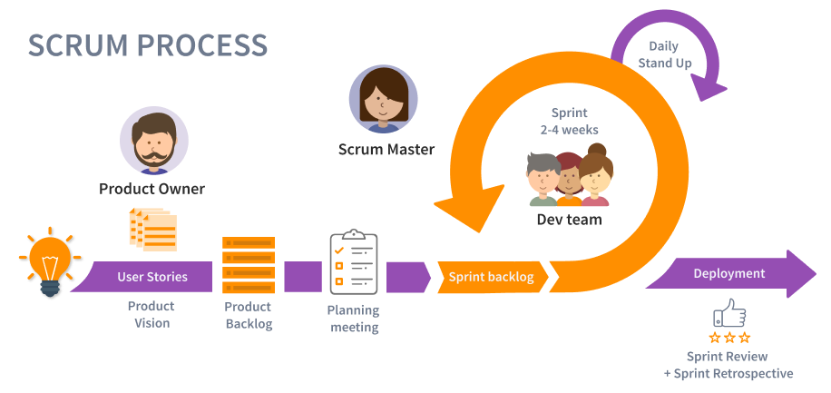

La metodología Scrum es un marco de trabajo o framework que se utiliza dentro de equipos que manejan proyectos complejos y no tan complejos.
Es decir, se trata de una metodología de trabajo ágil que tiene como finalidad la entrega de valor en períodos cortos de tiempo
y para ello se basa en tres pilares:
- La transparencia
- Inspección
- Adaptación
Esto permite al cliente, junto con su equipo comercial, insertar el producto en el mercado pronto, rápido y empezar a obtener ventas
